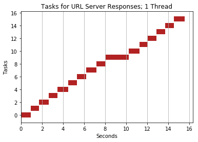
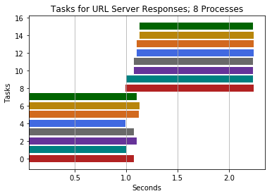
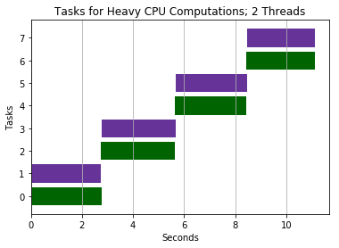
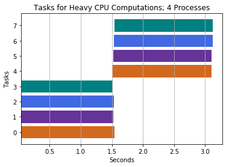

Intro to Multithreading and Multiprocessing
- Apr 25 • 19 min read
- Key Terms: multithreading, multiprocessing
Why is Performant Code Important
In analyzing data, you may be dealing with thousands, millions or even billions of records. As you perform computations to gain insights, you'll likely do lots of data transformations.
With each computation, to save even seconds or minutes can be greatly helpful for you to deliver insights to your team faster and ultimately get more work done over time.
With parallel programming in Python, you can do just that.
Brief Overview
Intro to Parallelism
Parallelism (aka parallel programming) is when two or more tasks run at the same time. There's important terminology to understand regarding parallelism too.
A thread is an execution context for code.
A process is a program and state of all threads executing in a program.
One process can have several threads running at the same time. One program could also have several proccess running at the same time.
In Python, by default programs run as a single process with a single thread of execution; this uses just a single CPU.
Examples parallelism can help with:
- executing database queries
- pre-processing lots of images to use for machine learning
- web crawling
CPU & Core
The CPU (central processing unit) manages the computational work of the computer. CPUs have one or more cores which allow for code to be executed simultaneously.
My Macbook Pro has 4 cores.
A single core can perform a number of computations in a limited amount of time. However, if a Python program uses another process running on another core, we greatly decrease the program's runtime.
Python's Global Interpreter Lock
CPython (the standard python implementation) has something called the GIL (Global Interpreter Lock); the GIL prevents two threads from executing simultaneously in the same program. However, two threads can run concurrently and one can run code while another may be waiting.
The GIL limits parallel programming in Python out of the box.
When to use threads versus processes
Threads are typically best for IO tasks or tasks involving external systems since threads work well to combine results quickly. On the other hand, processes need to pickle their results and therefore take more time to combine results from multiple processes.
Threads provide no benefit for expensive CPU tasks since threads must run within the GIL.
Multiple processes can speed up Python operations that are CPU intensive because they can utilize multiple cores and avoid Python's GIL.
map Function and Example
The use of map will be applied in our parallel programming examples later; so I'll provide a brief introduction now.
Below I wrote a function called number_times_two to take in a number, multiply it by two and return the result.
map is a built-in Python function that helps us easily apply a function over every item in an iterable such as a list.
We'll use the map function to apply number_times_two to every element in the list of numbers [1, 2, 3, 4].
This table illustrates the operations that will take place.
| Input | number_times_two Operation | Result |
|---|---|---|
| 1 | 1*2 | 2 |
| 2 | 2*2 | 4 |
| 3 | 3*2 | 6 |
| 4 | 4*2 | 8 |
def number_times_two(number):
"""
Multiply a number by 2
:param number: a value we'll use in our computation
:type number: (preferably an) int
:returns: number*2
"""
return number*2
type(number_times_two)
function
The map function returns an map object that is an iterator.
map(number_times_two, [1, 2, 3, 4])
<map at 0x10f325198>
We can call the built-in list function to output our result, the map object, as a list.
list(map(number_times_two, [1, 2, 3, 4]))
[2, 4, 6, 8]
Parallelism
Import Modules
from requests import get
from multiprocessing.dummy import Pool as ThreadPool
from multiprocessing import Pool
from concurrent.futures import ThreadPoolExecutor
from concurrent.futures import ProcessPoolExecutor
import matplotlib.pyplot as plt
from time import time
from random import sample
import numpy as np
%matplotlib inline
Helper Functions
These functions below will help us visually illustrate the effect of multithreading so it's easier to understand.
def multithreading(function, iterable, number_of_threads):
"""
Maps a function across an iterable (such as a list of elements) with the optional use of multithreading.
:param function: name of a function
:type function: function
:param iterable: elements used as inputs to function parameter
:type iterable: list
:param number_of_threads: number of threads to use in map operation
:type number_of_threads: int
:returns list_objects: return objects from our function parameter calls
:return type: list
"""
with ThreadPoolExecutor(max_workers=number_of_threads) as executor:
responses = executor.map(function, iterable)
return list(responses)
def do_multiprocessing(function, iterable, number_of_concurrent_processes):
"""
Maps a function across an iterable (such as a list of elements) with the optional use of multiprocessing.
:param function: name of a function
:type function: function
:param iterable: elements used as inputs to function parameter
:type iterable: list
:param number_of_concurrent_processes: number of concurrent processes in multiprocessing
:type number_of_concurrent_processes: int
:returns list_objects: return objects from our function parameter calls
:return type: list
"""
with ProcessPoolExecutor(max_workers=number_of_concurrent_processes) as executor:
responses = executor.map(function, iterable)
return list(responses)
def transform_timestamps_to_be_seconds_from_process_start_time(process_start_time, all_task_timestamps):
"""
Take list of start and end timestamps of # of seconds since epoch, and subtract the process start time from them all
Therefore we'll know how far timestamps are from the 0th second, the start of the program.
:param process_start_time: # of seconds since epoch for start of task
:type process_start_time: float
:param all_task_timestamps: # of seconds since epoch for end of task
:type all_task_timestamps: list
:return function_timestamps_starting_from_zero: same shape as all_task_timestamps but all values subtracted by process_start_time
:type function_timestamps_starting_from_zero: numpy array
"""
function_timestamps_starting_from_zero = np.array(all_task_timestamps) - process_start_time
return function_timestamps_starting_from_zero
def separate_list_elements(list_of_lists):
"""
Given a list structure such as [[x, y], [x, y]] return a list of just the x's and another of just y's
:param list_of_lists: list with nested lists
:type list_of_list: list
:return start_values, end_values: two lists - one of all 0-th index values and another of 1st index values in each nested list
:return type: tuple storing two lists
"""
start_values = [inner_list[0] for inner_list in list_of_lists]
start_values = np.array(start_values)
end_values = [inner_list[1] for inner_list in list_of_lists]
end_values = np.array(end_values)
return start_values, end_values
def generate_bar_colors(number_of_threads_or_subprocesses):
"""
Make a list of colors the same length as the number of threads or number of concurrent subprocesses
:param number_of_threads_or_subprocesses: number of threads used in multithreading or number of processes used in multiprocessing
:type number_of_threads_or_subprocesses: int
:return colors: list of colors chosen from good_colors
:type colors: list
"""
good_colors = ['firebrick', 'darkgreen', 'royalblue', 'rebeccapurple', 'dimgrey', 'teal', 'chocolate', 'darkgoldenrod']
colors = sample(good_colors, number_of_threads_or_subprocesses)
return colors
def visualize_task_times(start_times, end_times, plot_title, colors):
"""
Use Matplotlib module to create a horizontal bar chart of the time elapsed for each task.
:param start_times: start times of tasks
:type start_times: list
:param end_times: end times of tasks
:type end_times: list
:param plot_title: title of plot
:type plot_title: string
:param colors: colors of bars
:type colors: list
:return: None
"""
plt.barh(range(len(start_times)), end_times-start_times, left=start_times, color=colors);
plt.grid(axis='x');
plt.ylabel("Tasks");
plt.xlabel("Seconds");
plt.title(plot_title);
plt.figure(figsize=(12, 10));
plt.show();
return None;
def visualize_multiprocessing_effect(number_of_concurrent_processes, function_name, iterable, plot_title):
"""
Perform multithreading given a function_name and number_of_threads and visualize tasks as bar chart
:param number_of_concurrent_processes: number of concurrent processes in multiprocessing
:type number_of_concurrent_processes: int
:param function_name: name of function applied in multithreading operation
:type function_name: function
:param iterable: elements used as inputs to function parameter
:type iterable: list
:param plot_title: title of plot
:type plot_title: string
:return: None
"""
process_start_time = time() # we track time here
time_logs_multiprocessing_op = do_multiprocessing(function_name, iterable, number_of_concurrent_processes)
multiprocessing_task_timestamps = transform_timestamps_to_be_seconds_from_process_start_time(process_start_time, time_logs_multiprocessing_op)
start_times, end_times = separate_list_elements(multiprocessing_task_timestamps)
colors = generate_bar_colors(number_of_concurrent_processes)
visualize_task_times(start_times, end_times, plot_title, colors)
def visualize_multithreading_effect(number_of_threads, function_name, iterable, plot_title):
"""
Perform multithreading given a function_name and number_of_threads and visualize tasks as bar chart
:param number_of_threads: number of threads used in multithreading
:type number_of_threads: int
:param function_name: name of function applied in multithreading operation
:type function_name: function
:param iterable: elements used as inputs to function parameter
:type iterable: list
:param plot_title: title of plot
:type plot_title: string
:return: None
"""
process_start_time = time() # we track time here
time_logs_multithreading_op = multithreading(function_name, iterable, number_of_threads)
multithreading_task_timestamps = transform_timestamps_to_be_seconds_from_process_start_time(process_start_time, time_logs_multithreading_op)
start_times, end_times = separate_list_elements(multithreading_task_timestamps)
colors = generate_bar_colors(number_of_threads)
visualize_task_times(start_times, end_times, plot_title, colors)
Measure Server Response Times
This is a popular example on the web. For a long list of URLs, we'll use the requests module to get a response object.
With this response object, we could later perform operations to see the status of the request, get the contents of the site and more!
twelve_urls = ['https://secure.capitalbikeshare.com/map/']*16
def get_response_time_measurements(url):
"""
mark start time, then call the get method and pass in a url to receive a server response object, then mark end time
:param url: address of a worldwide web page
:type url: string
:returns: start_time and stop_time of this task
:type returns: list
"""
start_time = time()
try:
response = get(url)
except Exception as exception_object:
print('Error with request for url: {0}'.format(url))
stop_time = time()
return [start_time, stop_time]
First, just to illustrate our multithreading function, I'll call the multithreading function relevant to this example.
We'll be return a list of nested lists, in which each nested list will contain the start timestamp and end timestamp of each task - each task being getting a new server response.
multithreading(function=get_response_time_measurements, iterable=twelve_urls, number_of_threads=1)
[[1524632208.212652, 1524632209.3562171],
[1524632209.356304, 1524632210.377363],
[1524632210.377422, 1524632211.401835],
[1524632211.401959, 1524632212.424235],
[1524632212.424294, 1524632213.458614],
[1524632213.458688, 1524632214.472278],
[1524632214.4723809, 1524632215.3774521],
[1524632215.377533, 1524632216.250168],
[1524632216.250221, 1524632217.121071],
[1524632217.1211221, 1524632218.161929],
[1524632218.1619892, 1524632219.187152],
[1524632219.187215, 1524632220.207478],
[1524632220.207537, 1524632221.231024],
[1524632221.231082, 1524632222.255033],
[1524632222.255092, 1524632223.084519],
[1524632223.084579, 1524632223.900953]]
Multithreading with 1 Thread
In the visualizations below, each color represents the use of one thread in the operations.
So for multithreading with two threads, you'll see two color bars, one for each thread.
visualize_multithreading_effect(number_of_threads=1,
function_name=get_response_time_measurements,
iterable=twelve_urls,
plot_title="Tasks for URL Server Responses; 1 Thread")

<matplotlib.figure.Figure at 0x10f883240>
Multithreading with 2 Threads
visualize_multithreading_effect(number_of_threads=2,
function_name=get_response_time_measurements,
iterable=twelve_urls,
plot_title="Tasks for URL Server Responses; 2 Threads")

<matplotlib.figure.Figure at 0x10f96acf8>
Let's visualize the effect of multithreading with 4 threads.
Multithreading with 4 Threads
visualize_multithreading_effect(number_of_threads=4,
function_name=get_response_time_measurements,
iterable=twelve_urls,
plot_title="Tasks for URL Server Responses; 4 Threads")

<matplotlib.figure.Figure at 0x12d98ef98>
Multithreading with 8 Threads
visualize_multithreading_effect(number_of_threads=8,
function_name=get_response_time_measurements,
iterable=twelve_urls,
plot_title="Tasks for URL Server Responses; 8 Threads")

<matplotlib.figure.Figure at 0x12d963048>
Multiprocessing with 1 Process
In the visualizations below, each color represents the use of one process in the operations.
So for multiprocessing with two concurrent processes, you'll see two color bars, one for each process.
visualize_multiprocessing_effect(number_of_concurrent_processes=1,
function_name=get_response_time_measurements,
iterable=twelve_urls,
plot_title="Tasks for URL Server Responses; 1 Process")

<matplotlib.figure.Figure at 0x10f320f98>
Multiprocessing with 2 Processes
visualize_multiprocessing_effect(number_of_concurrent_processes=2,
function_name=get_response_time_measurements,
iterable=twelve_urls,
plot_title="Tasks for URL Server Responses; 2 Processes")

<matplotlib.figure.Figure at 0x113d6f0f0>
Let's visualize the effect of multiprocessing with 4 concurrent processes.
Multiprocessing with 4 Processes
visualize_multiprocessing_effect(number_of_concurrent_processes=4,
function_name=get_response_time_measurements,
iterable=twelve_urls,
plot_title="Tasks for URL Server Responses; 4 Processes")

<matplotlib.figure.Figure at 0x10f2b6358>
Let's visualize the effect of multiprocessing with 8 concurrent processes.
visualize_multiprocessing_effect(number_of_concurrent_processes=8,
function_name=get_response_time_measurements,
iterable=twelve_urls,
plot_title="Tasks for URL Server Responses; 8 Processes")

<matplotlib.figure.Figure at 0x12d976128>
Single Process and Thread
Now, let's perform the same operation without the overhead of setting up multithreading.
%%time
# traditional python program without multithreading
task_timestamps = list(map(get_response_time_measurements, twelve_urls));
CPU times: user 410 ms, sys: 28.4 ms, total: 438 ms
Wall time: 16 s
Conclusion: both multithreading and multiprocessing complete much quicker than a single thread & program.
The reason parallel programming is much faster here is because the processor isn't working very hard to retreive the contents on the sites; however, the bottleneck is waiting for the site's server response to our HTTP request - an external resource. While one task is performing an operation of getting/waiting for a server response for one URL, another task can start for a different URL.
Threads are also fairly quick to combine their results too. So if we were web crawling and constantly wanted to combine results from multiple crawlers, it'd be ideal to use multiple threads to spawn multiple web crawlers rather than multiple processes which take longer to combine results.
Example: Squares of Numbers
Given this big list of numbers in big_list, we want to output a new list that has the square of all numbers in big_list.
Think of this as a lot of small operations.
big_list = range(1, 12000000)
def square_value(x):
return x**2
Multithreading
Below I utilize code from another module of the Python standard library, multiprocessing, to perform multithreading for this operation.
By default, we will use all available threads on our computer.
%%time
pool = ThreadPool()
squares_pool_results = pool.map(square_value, big_list)
pool.close()
pool.join()
CPU times: user 5.51 s, sys: 715 ms, total: 6.23 s
Wall time: 6.2 s
Multiprocessing
Below I utilize code from the lower-level module of the Python standard library, multiprocessing, to perform multiprocessing for this operation.
We'll use 2 concurrent processes.
%%time
with Pool(processes=2) as multiprocessing_operation:
multiprocessing_operation.map(square_value, big_list)
CPU times: user 2.04 s, sys: 947 ms, total: 2.99 s
Wall time: 4.84 s
Single Process & Thread
%%time
squares_results = map(square_value, big_list)
CPU times: user 13 µs, sys: 8 µs, total: 21 µs
Wall time: 26 µs
Conclusion: process completes much faster without parallel programming.
This may come as a surprise that parallel programming hurts our performance here.
Using parallel programming in Python or any other interpreted language with a global interpreter lock (GIL) can actually result in reduced performance if you're just doing a CPU bound task. This program must carry parallel programming's additional overhead of creating new threads or processes and synchronizing their results.
Example: CPU Heavy Computations
In this example, we'll only perform 8 tasks - with each task requiring a large amount of math operations.
def sum_all_intgers_from_zero_to_end_range_number(end_range_number):
"""
Calculate the sum of all integer numbers from 0 to end_range_number.
:param end_range_number: highest value to loop over
:type end_range_number: integer
:returns [start_time, stop_time]: list of start_time of task and end time of task
:return type: list
"""
start_time = time()
the_sum = 0
for number in range(0, end_range_number):
the_sum += number
stop_time = time()
return [start_time, stop_time]
large_number = 11**7
iterations = 8
large_numbers = [large_number]*iterations
large_numbers
[19487171,
19487171,
19487171,
19487171,
19487171,
19487171,
19487171,
19487171]
Multithreading
Let's visualize the effect of multithreading with 2 concurrent threads.
visualize_multithreading_effect(number_of_threads=2,
function_name=sum_all_intgers_from_zero_to_end_range_number,
iterable=large_numbers,
plot_title="Tasks for Heavy CPU Computations; 2 Threads")

<matplotlib.figure.Figure at 0x10f2d0278>
Multiprocessing
Let's visualize the effect of multiprocessing with 2 concurrent subprocesses.
visualize_multiprocessing_effect(number_of_concurrent_processes=2,
function_name=sum_all_intgers_from_zero_to_end_range_number,
iterable=large_numbers,
plot_title="Tasks for Heavy CPU Computations; 2 Processes")

<matplotlib.figure.Figure at 0x11b03c978>
Let's visualize the effect of multiprocessing with 4 concurrent subprocesses.
visualize_multiprocessing_effect(number_of_concurrent_processes=4,
function_name=sum_all_intgers_from_zero_to_end_range_number,
iterable=large_numbers,
plot_title="Tasks for Heavy CPU Computations; 4 Processes")

<matplotlib.figure.Figure at 0x113e07978>
Let's visualize the effect of multiprocessing with 5 concurrent subprocesses.
The runtime of this program is the same as that of 4 subprocess above. But why? Well, there's no benefit to attempting to use greater than 4 sub-processes for CPU bound tasks because my laptop has just 4 cores - the ability to run a single process concurrently on each core.
visualize_multiprocessing_effect(number_of_concurrent_processes=5,
function_name=sum_all_intgers_from_zero_to_end_range_number,
iterable=large_numbers,
plot_title="Tasks for Heavy CPU Computations; 5 Processes")

<matplotlib.figure.Figure at 0x11b2bbb70>
Single Program & Thread
%%time
for i in range(iterations):
sum_all_intgers_from_zero_to_end_range_number(large_number)
CPU times: user 10.9 s, sys: 34.8 ms, total: 11 s
Wall time: 11 s
Conclusion: program completes much faster with multiprocessing at approximately 4 subprocesses running concurrently.
Multiprocessing here was helpful for this CPU intensive task because we could benefit from using multiple cores and avoid the global interpreter lock.
Interestingly, spinning up additional subprocesses past 4 has no major effect on improving runtime of our program. Notice how the total program runtime with 4 subprocesses is equivalent to the program with 5 subprocesses.
Threads provide no benefit in Python for CPU intensive tasks like these because of the global interpreter lock.